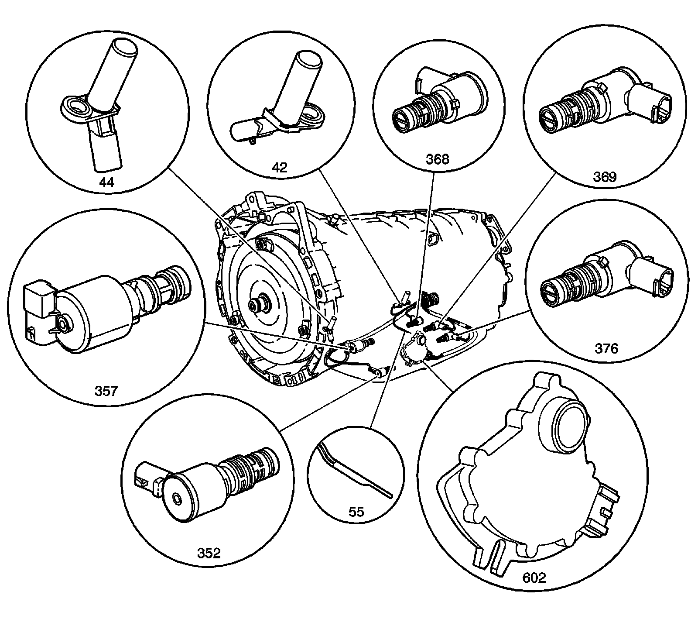
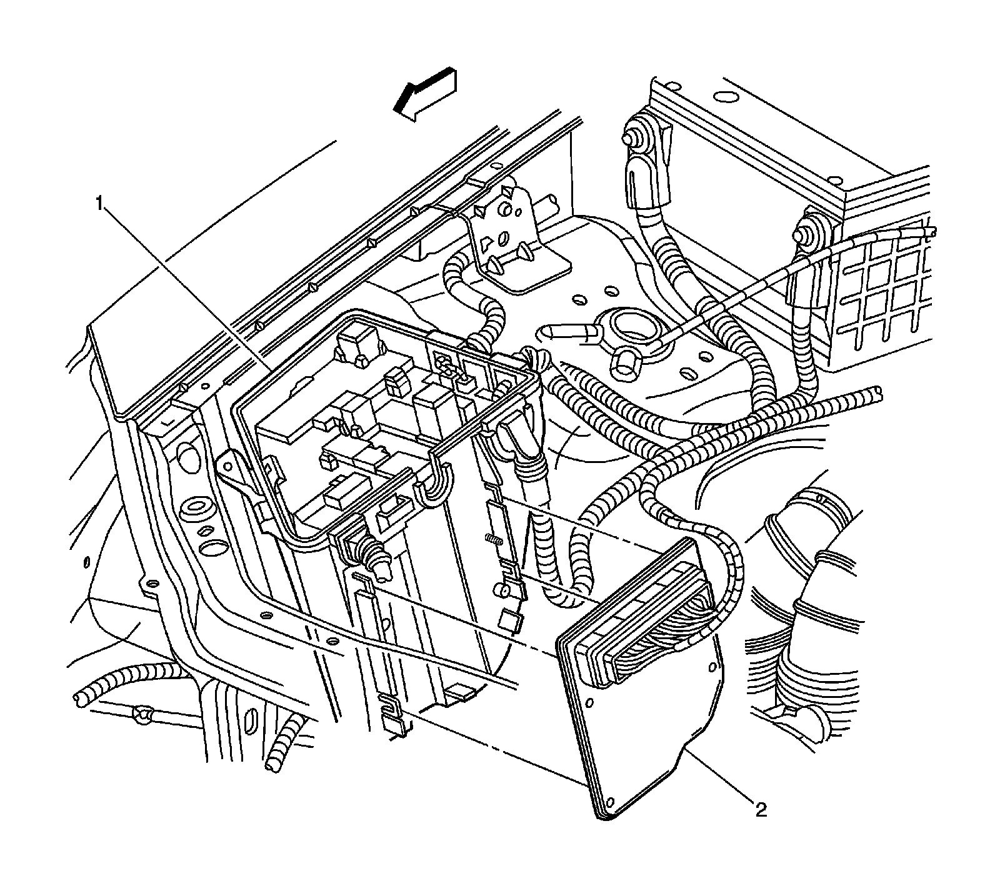

Transmission Temperature Sensor/Switch: Locations
Automatic Transmission Electronic Component Views
Automatic Transmission Electronic Component Locations
Automatic Transmission Electronic Component Locations:

42 - Output Speed Sensor (OSS)
44 - Input Speed Sensor (ISS)
55 - Transmission Fluid Temperature (TFT) Sensor - Part of Automatic Transmission Wiring Harness (55)
352 - TCC PWM Solenoid Valve
357 - Pressure Control Solenoid (PCS) Assembly
368 - 1-2 Shift Solenoid (SS) Valve Assembly
369 - 2-3 Shift Solenoid (SS) Valve Assembly
376 - 4-5 Shift Solenoid (SS) Valve Assembly
602 - Transmission Manual Shift Shaft Switch Assembly
Transmission Control Module (TCM) (w/M82)
Transmission Control Module (TCM) (w/M82):

1 - Fuse Block - Underhood
2 - Transmission Control Module (TCM)